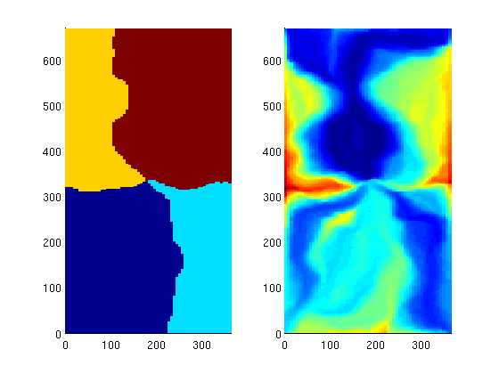

Example 1: Basic flow diagnostics
In this example we will demonstrate how we can use time-of-flight and stationary tracer distribution computed using a standard finite-volume method to derive three different measures for heterogeneity:
- flow-capacity/storage-capacity diagram,
- the Lorenz coefficient
- sweep efficiency
Technical description: see Shavali et al. (SPE 146446), Shook and Mitchell (SPE 124625).
Contents
Set up and solve flow problem
As our example, we consider a standard five spot with heterogeneity sampled from Model 2 of the 10th SPE Comparative Solution Project.
mrstModule add spe10 [G, W, rock] = SPE10_setup(25); rock.poro = max(rock.poro, 1e-4); fluid = initSingleFluid('mu', 1*centi*poise, 'rho', 1014*kilogram/meter^3); rS = initState(G, W, 0); S = computeMimeticIP(G, rock); rS = solveIncompFlow(rS, G, S, fluid, 'wells', W);
Compute and display time-of-flight and tracer partitioning
First we compute time-of-flight which is the travel time from an injector to a given point in the reservoir, and stationary distribution of tracers injected continuously from each injetion well. From the latter, we can easily compute the volume flooded by each injector. Reversing the velocity field, we can cmopute the reverse time-of-flight (the travel time from an arbitrary point to the nearest producer) and the drainage volumes of each producer.
D = computeTOFandTracer(rS, G, rock, 'wells', W); subplot(1,2,1); plotCellData(G,D.ppart); axis equal tight subplot(1,2,2); plotCellData(G,log10(sum(D.tof,2))); axis equal tight
Threshold the tracer regions using time-of-flight to show the development of flooded regions
for i=1:4 subplot(2,2,i); plotCellData(G,D.ppart, D.tof(:,1)<5*i*year); title(['Flooded after ' num2str(i*5) ' years']); axis equal tight off; end
Compute and display flow-capacity/storage-capacity diagram
Making an analogue to 1D displacement theory, the F-Phi curve is the equivalent to a plot of the fractional flow versus saturation.
[F,Phi] = computeFandPhi(G.cells.volumes,D.tof);
figure, plot(Phi,F,'.');
Compute the Lorenz coefficient
The Lorenz coefficient is a popular measure of heterogeneity. It is equal to twice the area under the curve and above the F=Phi line. It varies between 0 (homogeneous displacement) to 1 (infinitely heterogeneous displacement).
fprintf(1, 'Lorenz coefficient: %f\n', computeLorenz(F,Phi));
Lorenz coefficient: 0.317024
Compute and display sweep efficiency versus dimensionless time
Analogue: 1D displacement using the F-Phi curve as a flux function
[Ev,tD] = computeSweep(F,Phi);
figure, plot(tD,Ev,'.');